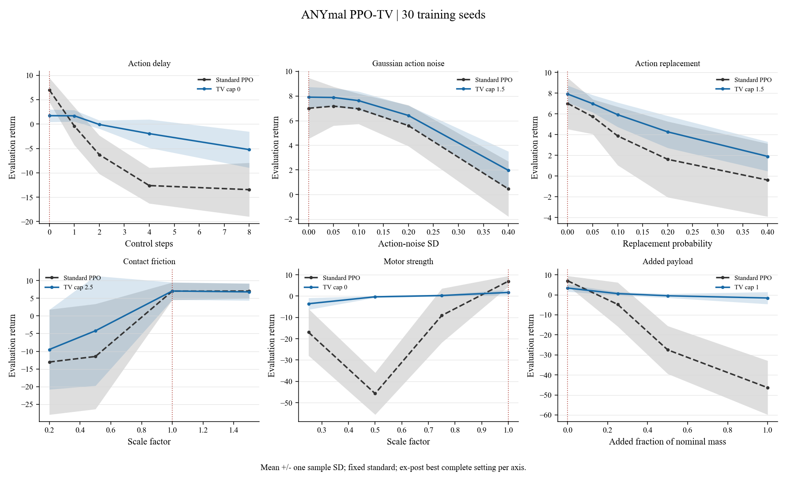
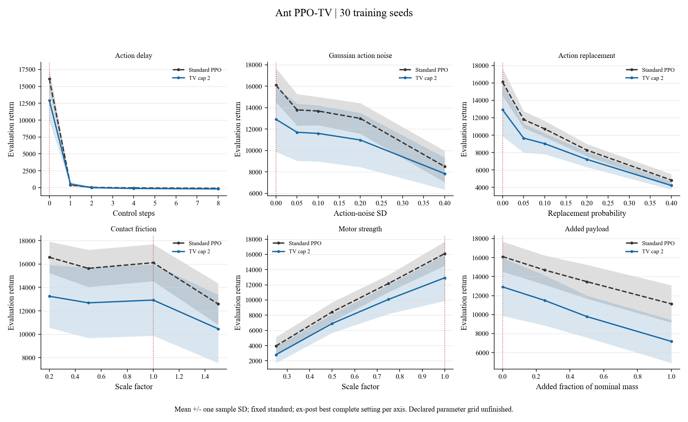
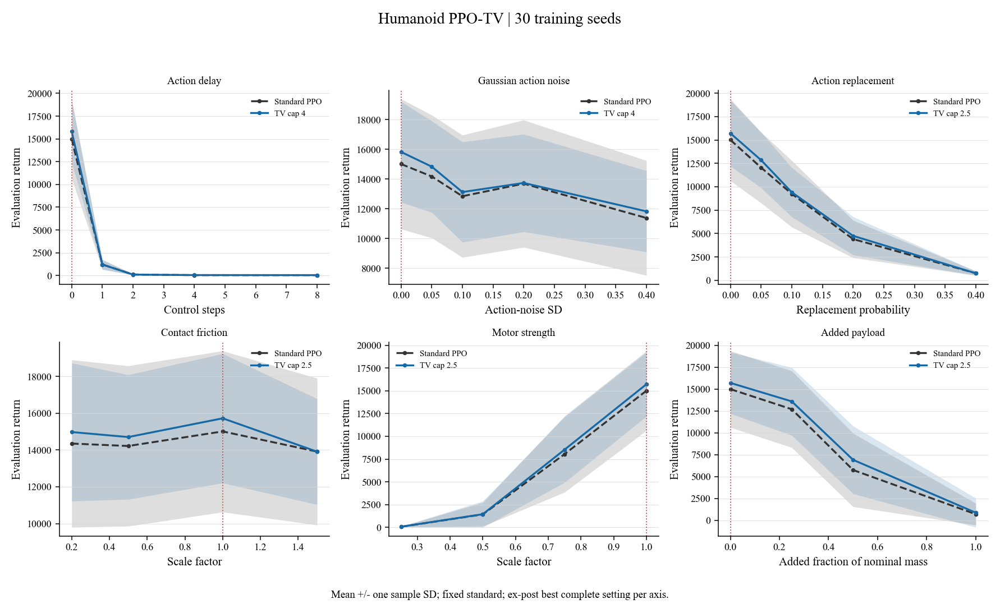
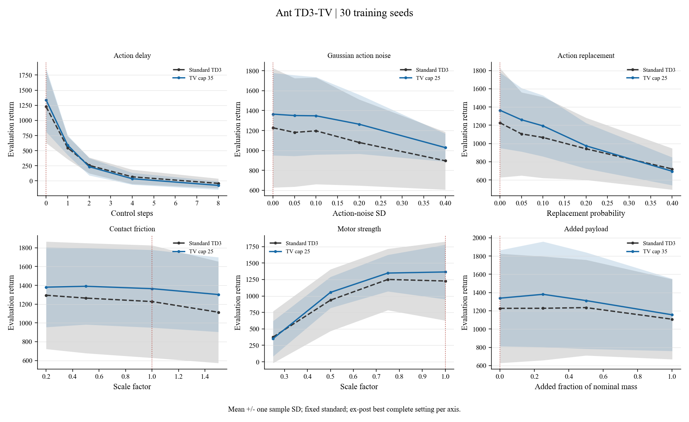
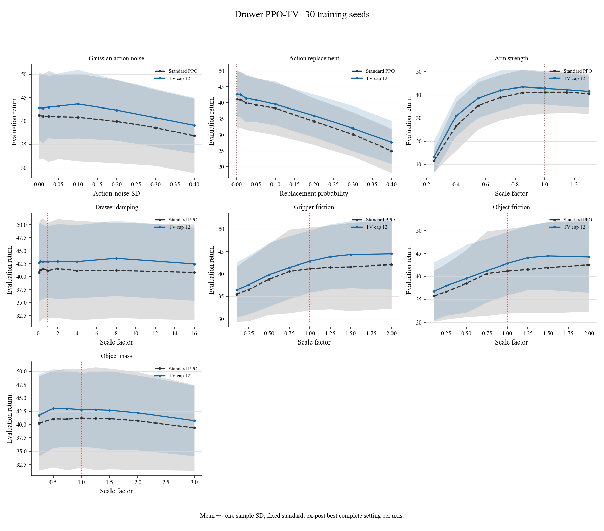

Local fetched snapshot, not live cluster status. Only complete 30-seed settings are plotted. Incomplete settings remain in seed accounting. Means and sample SD are descriptive; ex-post cap selection is not held-out evidence. No competence, significance or physical-success certification. All three Pusher friction axes have flat saved per-policy returns; their intervention effectiveness is unverified.
Combined PDF atlasOverleaf ZIPSelections CSVSeed accounting7/7 declared TV caps have full 30-seed suites; 29,491,200 native transitions per policy. Competence not certified by returns/completion.
Overview PDF
Action delay Gaussian action noise Action replacement Contact friction Motor strength Added payload1/6 declared TV caps have full 30-seed suites; 32,768,000 native transitions per policy. Competence not certified by returns/completion.
Overview PDF
Action delay Gaussian action noise Action replacement Contact friction Motor strength Added payload6/6 declared TV caps have full 30-seed suites; 32,768,000 native transitions per policy. Competence not certified by returns/completion.
Overview PDF
Action delay Gaussian action noise Action replacement Contact friction Motor strength Added payload6/6 declared TV caps have full 30-seed suites; 512,000 native transitions per policy. Competence not certified by returns/completion.
Overview PDF
Action delay Gaussian action noise Action replacement Contact friction Motor strength Added payload6/6 declared TV caps have full 30-seed suites; 10,240,000 native transitions per policy. Competence not certified by returns/completion.
Overview PDF
Gaussian action noise Action replacement Arm strength Drawer damping Gripper friction Object friction Object mass